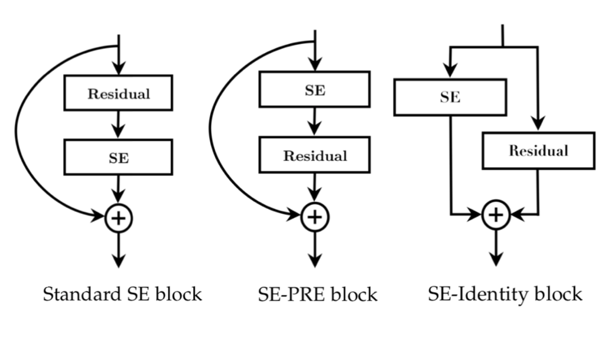
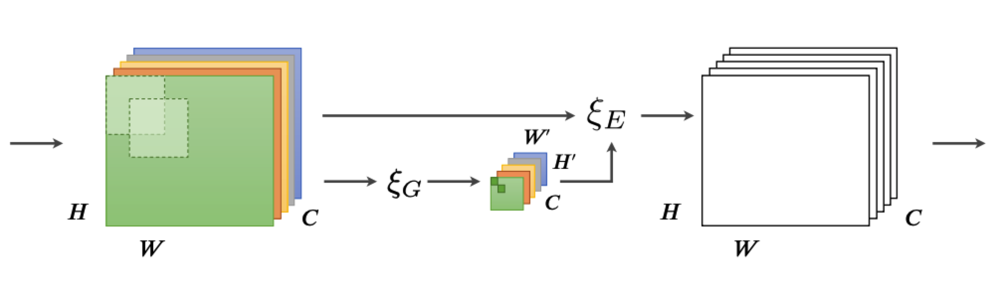
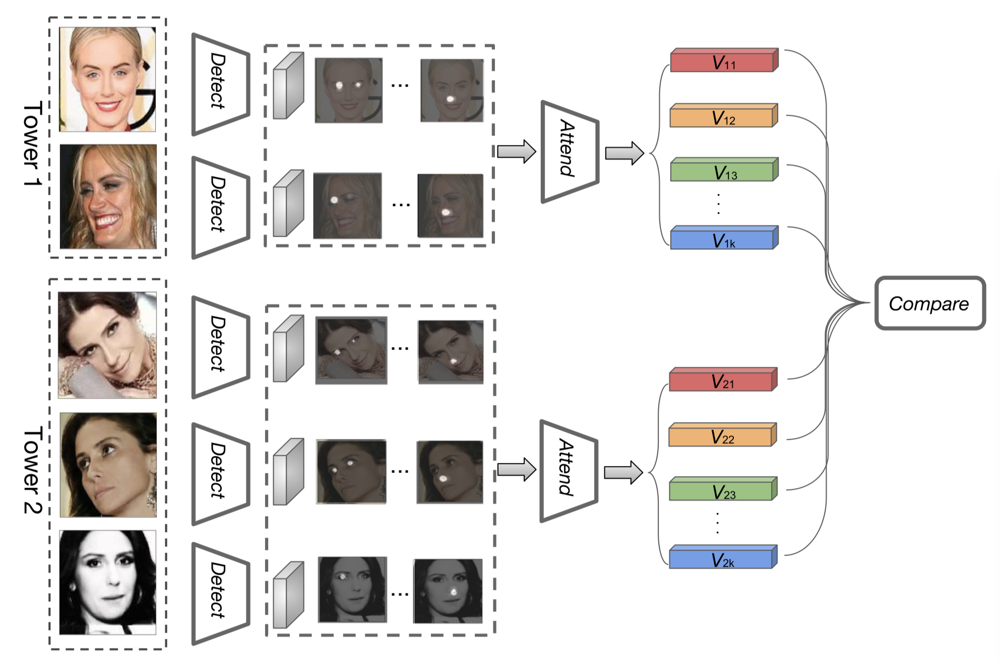
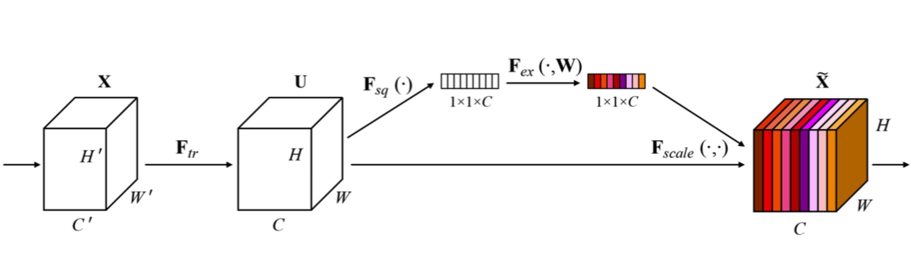
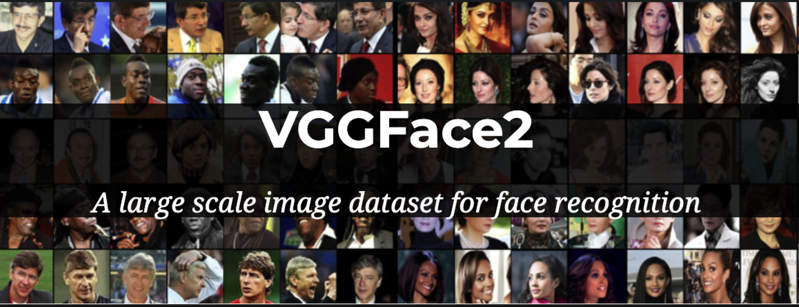
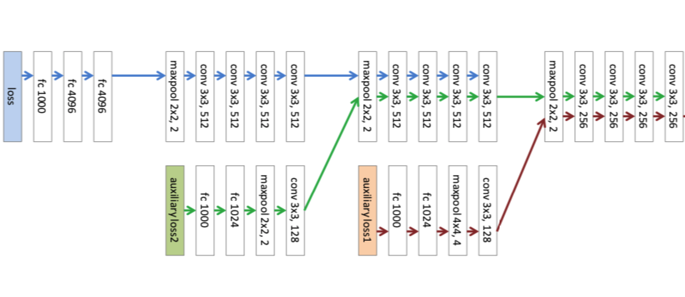
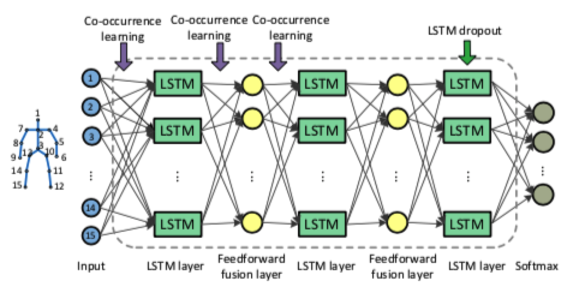
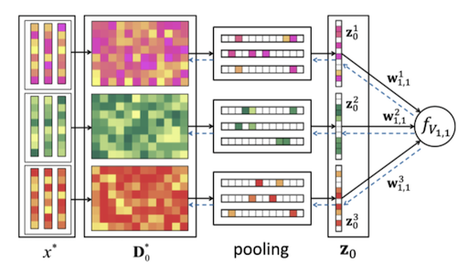
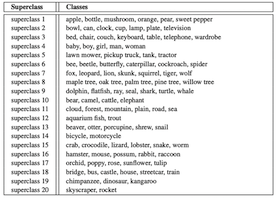
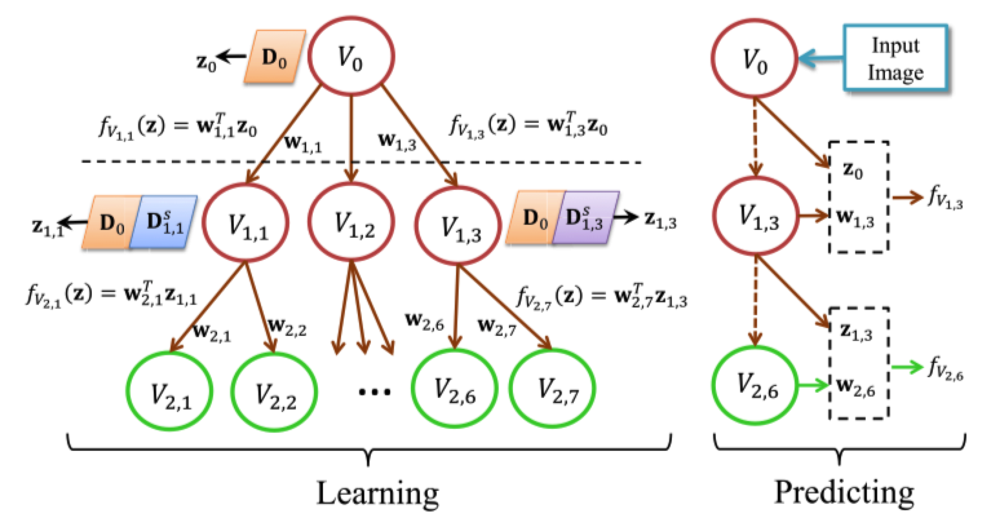

|
I'm a senior researcher at Tencent AI Lab. Formerly I was a researcher in the Visual Geometry Group at the University of Oxford, working with Professor Andrew Zisserman.
I received my Ph.D in Computer Science from the University of Chinese Academy of Sciences, under the supervision of Prof. Qingming Huang. I was also supervised by Prof. Zhouchen Lin at the Peking University.
|
- Recruiting researchers/engineers/research interns! Feel free to contact me.
- I'm the organiser of the workshop Neural Architects at ICCV 2019.
Neural Architects: What have we learned and where are we going? - for all things related to Deep Neural Network design.
Call for papers and additional info here.
|  |
Jie Hu, Li Shen, Samuel Albanie, Gang Sun and Enhua Wu IEEE Transactions on Pattern Analysis and Machine Intelligence, 2019. Journal extension of the work SENets. Paper / ArXiv / Code & Model / Bibtex |
|  |
Jie Hu*, Li Shen*, Samuel Albanie*, Gang Sun and Andrea Vedaldi Advances in Neural Information Processing Systems (NeurIPS), 2018. Paper / ArXiv / Code & Model / Bibtex |
|  |
Weidi Xie, Li Shen, Andrew Zisserman European Conference on Computer Vision (ECCV), 2018. Paper / ArXiv / Bibtex |
|  |
Jie Hu*, Li Shen* and Gang Sun Computer Vision and Pattern Recognition (CVPR), 2018 (Oral). Winner at the ImageNet (ILSVRC) 2017 Image Classification Track. Paper / Code & Model / Bibtex |
|  |
Qiong Cao, Li Shen, Weidi Xie, Omkar M Parkhi and Andrew Zisserman Conference on Automatic Face & Gesture Recognition (FG), 2018 (Oral). ArXiv / Code & Model / Project / Bibtex |
|  |
Li Shen, Zhouchen Lin and Qingming Huang European conference on computer vision (ECCV), 2016. Winner at the ImageNet (ILSVRC) 2015 Scene Classification Track. Paper / ArXiv / Model / Bibtex |
|  |
Wentao Zhu, Cuiling Lan, Junliang Xing, Wenjun Zeng, Yanghao Li, Li Shen and Xiaohui Xie Thirtieth AAAI Conference on Artificial Intelligence, 2016. Paper / ArXiv / Bibtex |
|  |
Li Shen, Gang Sun, Qingming Huang, Shuhui Wang, Zhouchen Lin and Enhua Wu IEEE Transactions on Image Processing, 2016. Paper / Bibtex |
|  |
Li Shen, Gang Sun, Zhouchen Lin, Qingming Huang and Enhua Wu International Joint Conference on Artificial Intelligence (IJCAI), 2015. Paper / Bibtex |
|  |
Li Shen, Gang Sun, Zhouchen Lin, Qingming Huang and Enhua Wu Computer Vision and Pattern Recognition (CVPR), 2013. Paper / Bibtex |
- Winner at the ImageNet (ILSVRC) 2017 Image Classification Track (CVPR17 Workshop).
- Winner at the ImageNet (ILSVRC) 2015 Scene Classification Track (ICCV15 Workshop).
Last Update: July 1, 2019
Published with GitHub Pages